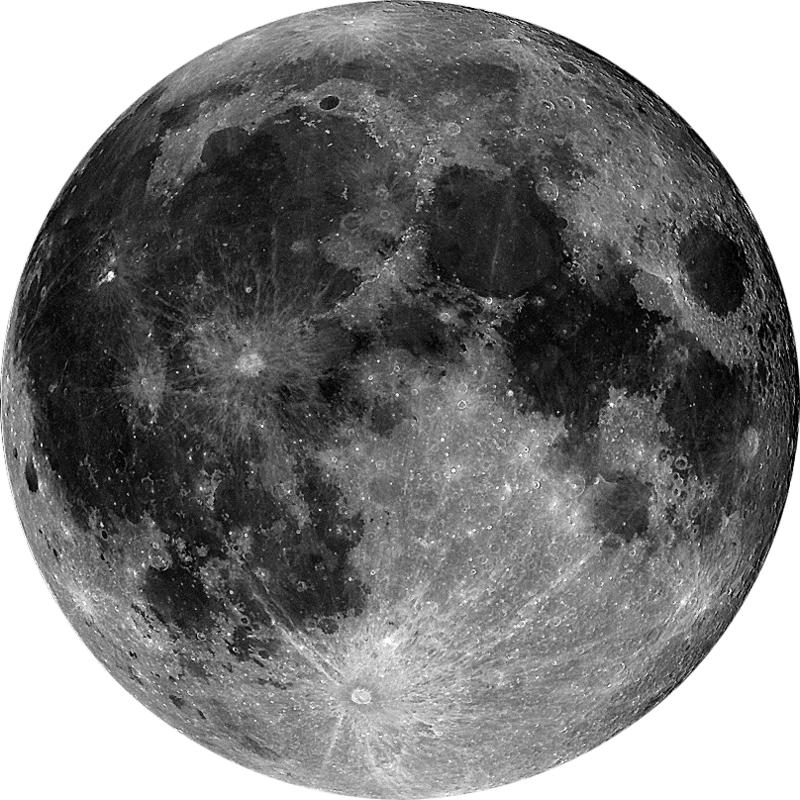

Para Ingrid
Desliza hacia abajo
Lo que amo de ella
Para mi hermosa Ingrid, minha senhora, minha lua.
Han pasado 5 años increíbles desde que nuestros caminos se cruzaron por primera vez. Mirar atrás y ver todo lo que hemos recorrido juntos me llena el corazón de una gratitud inmensa. A pesar de la distancia entre Arica y Brasil, de los desafíos, de mis propios tropiezos y del peso de la rutina, tú has sido la constelación más brillante que ha guiado mis días.
Sé que no siempre ha sido fácil. Durante mucho tiempo, mis propias inseguridades, el miedo a perderte y el peso de mis bloqueos me hacían levantar muros y ponerme a la defensiva. Lamento profundamente las veces que te hice sentir mal, las veces que mis silencios o mis reacciones torpes te lastimaron. Hoy entiendo que el verdadero cambio no se trata de exigir un borrón y cuenta nueva, sino de aceptar que las cicatrices están ahí, y demostrarte con hechos reales, día tras día, que el Luis de hoy es un compañero seguro para ti.
Admiro tanto la mujer que eres. Te veo despertar a las 6 de la mañana, enfrentar 9 horas de trabajo con una fortaleza incansable, lidiar con el cansancio, con Pingo y con el peso de tu día a día, y aun así, cuando nos encontramos, me ofreces tu ternura infinita. Amo nuestra complicidad tan nuestra: compartir tiktoks tontos, mantener nuestra racha en Duolingo, reírnos de la nada y encontrar esa paz inmensa cuando me pides que me acurruque en tu pecho. Esos pequeños momentos cotidianos son mi lugar favorito en el mundo entero.
Sé que a veces la vida nos pone pruebas difíciles, como mis años por delante en la universidad o las pausas que has tenido que hacer en tus propios planes. Pero quiero que sepas que valoro cada sacrificio, cada palabra de aliento y cada gramo de paciencia que me has tenido. No quiero ser una carga para ti, sino el refugio y el apoyo firme con el que siempre puedas contar.
Gracias por no soltar mi mano, por enseñarme lo que significa amar de verdad y por quedarte a mi lado incluso cuando ni yo mismo me soportaba. Eres mi hogar, mi paz y mi gran orgullo. Feliz aniversario de 5 años, mi vida. Te amo con todo mi ser.
Tu indio, Luis.